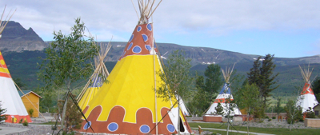
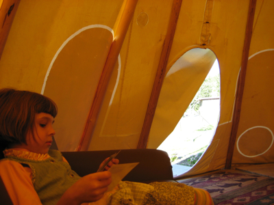
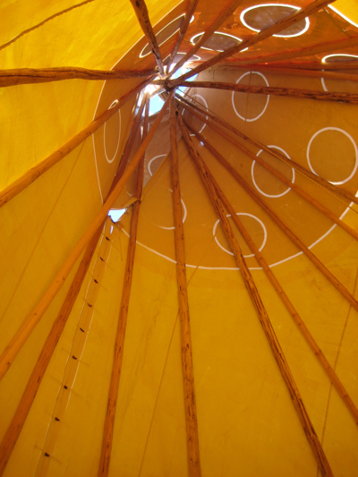
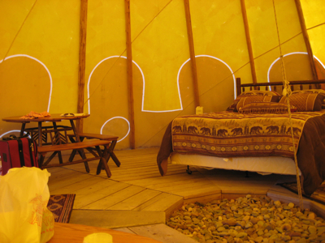

After our tour of the Going-to-the-Sun Road on June 30, 2009, we went to the St. Mary Lodge and Resort in St. Mary, Montana. Calling this place a "Lodge and Resort" is a misnomer. It's really just a multi-room hotel with some cabins, a store, a gas station, a decent restaurant, a gift shop, all surrounded by blacktop parking. (What you can't see from this picture of their cabins is that these buildings are right on the road, and it's a pretty busy one.)
We had a decent meal at the lodge's restaurant. I had whitefish supposedly fished from the nearby St. Mary's lake, and Julie had elk medallions. The wine was pretty bad, as was the service. And it was damn expensive, but I guess that's to be expected given how far we were from normal distribution circuits.
In addition, they have teepees (oops, I should be more politically-correct: tipis). There were seven or eight of them. Each one is quite large, perhaps 20 feet tall, and large enough to accommodate two queen-sized beds, a couch, and a table. There is no power in the tipi, so you are issued a battery-powered lantern. You also get a key to a small building next to your tipi that has a shower/hot-tub, toilet, sinks, and power.
Upon being told the number of our tipi (#2), we walked across the street to take a look. On examination of the tipis, they seemed to be made by a company from British Columbia. They were made of very heavy fabric, that was, I think, decoratively painted (from the inside, you could see something like brush-strokes). The poles were sturdily planted into the ground with industrial-strength fittings. Looking closely at this particular tipi, a lot was off. For one thing, the flap on the front had no means to secure it. There was a pole on the ground that was (from looking at the other tipis) supposed to be in place to hold open the top of the tipi. This particular tipi was also right off of the road. People would stop their cars and take a look inside. In general, it seemed kind of lousy, and made me kind of nervous: With that proximity to the road, there would be noise, as well as the possible intrusion from nosy passers-by. So we asked for a tipi change.
The new tipi (#3) had a flap that could be secured, as well as all of its poles in the right place, and it was off the road. Better.
The tipis are not particularly air-tight; there was a noticeable gap at the bottom between the bottom edge of the tipi fabric and the ground. Julie and Caroline are very tasty for mosquitoes (I'm not, for whatever reason), so the whole thing seemed like kind of a bad idea to me. Also, here we are briefly in "civilization," and . . . no wifi in the tipi? Plus, the cost was by far the most expensive option at the Lodge.
Having said all that, it was pretty neat on the side (see the pictures below). After the pictures, though, I have a bit of a tale to tell.    
After getting settled for bed, we fell asleep. At about 1:30 AM, I woke up with a start. Outside I could hear a huge wind bearing down from over the mountain. What's more, the poles were rattling, and you could sense that the entire tipi was being significantly stressed by the wind. A lot of nightmare scenarios floated through my mind, mostly along the lines of "how could I put my six-year old in a fragile structure in the wilds of Montana?" I stepped outside the tipi, and the night sky was illuminated by a nearly-full moon. Clouds had set in, which was too bad because I had wanted to see the starry sky without the light pollution. I could see that the clouds were being blown rapidly by the wind. I would guess that the gusts were at maybe 35 mph: It really seemed like too much for the tipi. I woke up Julie and we wondered if we should ask to be transferred to the "Lodge." We talked for awhile, but didn't come to a decision. Julie fell back asleep. I stayed awake, staring at the top of the tipi, wondering when the whole thing would come crashing down. While I was lying there frozen with fears, I could hear people from the neighboring tipis partying noisily at the outdoor jacuzzi -- who were these people? Eventually I, too, fell asleep. Julie tells me that she woke up again at 3:30 AM, and heard the rattling and crazy winds all over again.
Meanwhile, Caroline slept through the whole thing.
The upshot of this is that I wouldn't recommend the tipis. They are too exposed to the elements (if not to passers-by); when you've had a long road trip, I think you need a quiet locked room and the amenities of a real hotel.
comments powered by Disqus{kind=link}